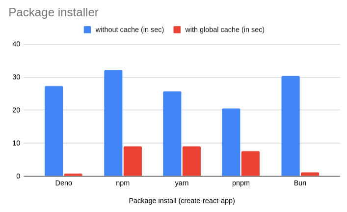

18 September 2024
$ uname -a
Linux divy 6.10.6-arch1-1 #1 SMP PREEMPT_DYNAMIC Mon, 19 Aug 2024 17:02:39 +0000 x86_64 GNU/Linux| Runtime | Version |
|---|---|
| Node.js | 22.8.0 |
| Deno | 2.0.0-rc.2 |
| Bun | 1.1.27 |
| Npm | 10.7.0 |
| Yarn | 1.22.22 |
| Pnpm | 9.1.1 |
Get the create-react-app template from this
repository.
$ git clone https://github.com/littledivy/cra-pm-benchHere is a shell script to clean cache and measure time taken to install dependencies with each package manager.
# Remove global cache (uncomment to measure performance with cache)
rm -rf ~/.bun/install/cache
rm -rf ~/.cache/deno/npm
npm cache clean --force
yarn cache clean --force
pnpm store prune
rm -rf ~/.pnpm-store
commands=(
"bun i"
"deno i"
"yarn"
"npm i"
"pnpm i"
)
for command in "${commands[@]}"
do
echo "Benchmarking $command"
mkdir testbed
cp -R cra-pm-bench/* testbed
cd testbed
time $command;
cd ..
rm -rf testbed
doneWarning: Make sure you have a stable internet connection or you can also use a cached proxy service to avoid network latency affecting the results.
Run the same script with the cache enabled to measure performance with cache.

| Runtime | Uncached | Cached |
|---|---|---|
| Deno | 27.332s | 0.869s |
| npm | 32.112s | 9.034s |
| yarn | 25.694s | 8.955s |
| pnpm | 20.525s | 7.645s |
| Bun | 30.395s | 1.219s |